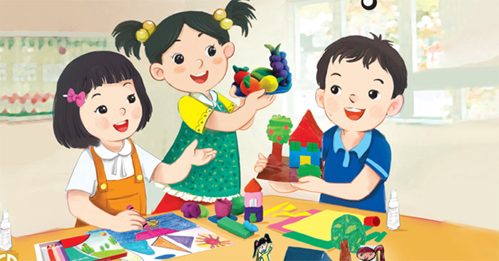
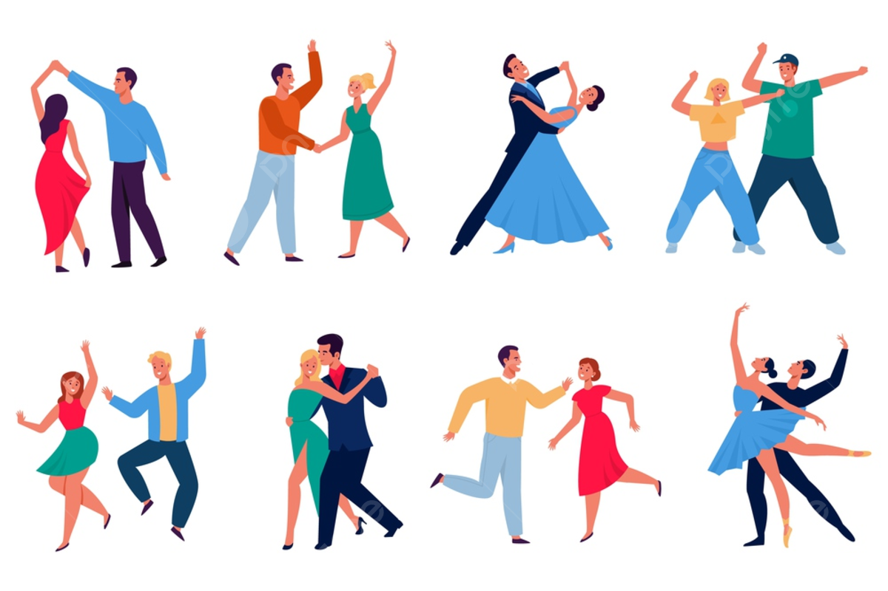

Hoạt động năng nổ và hiệu quả
Cháy hết mình trong các cuộc chơi
Giành những giải thương cao nhất
CLB Âm nhạc của trường được thành lập từ năm 2016, là nơi hội tụ của các bạn trẻ đam mê ca hát, nhạc cụ và sáng tạo nghệ thuật. Với sự hướng dẫn của các thầy cô có chuyên môn, CLB đã gặt hái được nhiều thành tích nổi bật như 01 giải Nhì và 02 giải Ba cấp quận trong hội thi Biểu diễn âm nhạc. Đây không chỉ là sân chơi để học sinh thể hiện tài năng mà còn là nơi gắn kết những tâm hồn yêu nghệ thuật.
CLB Mĩ thuật của trường ra đời vào năm 2018, là nơi quy tụ những bạn trẻ đam mê hội họa, thiết kế và sáng tạo. Dưới sự hướng dẫn tận tình của các thầy cô giàu kinh nghiệm, CLB đã đạt được nhiều thành tích đáng tự hào, trong đó có 01 giải Nhất và 01 giải Ba cấp thành phố tại cuộc thi Vẽ tranh bảo vệ môi trường. CLB không chỉ là nơi phát triển kỹ năng nghệ thuật mà còn tạo cơ hội để học sinh lan tỏa thông điệp tích cực qua từng nét vẽ.
CLB Nhiếp ảnh được thành lập năm 2019, là không gian lý tưởng cho những học sinh đam mê chụp ảnh và khám phá vẻ đẹp của cuộc sống qua ống kính. Với sự đồng hành của các thầy cô và các nhiếp ảnh gia khách mời, CLB đã giành được nhiều giải thưởng, nổi bật là 01 giải Nhất và 02 giải Khuyến khích tại cuộc thi Ảnh học đường. Tham gia CLB, các thành viên không chỉ học hỏi kỹ thuật chụp ảnh mà còn chia sẻ những khoảnh khắc ý nghĩa cùng bạn bè.
Được thành lập từ năm 2017, CLB Khiêu vũ là nơi dành cho các học sinh yêu thích nghệ thuật biểu diễn và các điệu nhảy sôi động. Dưới sự hướng dẫn của các thầy cô chuyên nghiệp, CLB đã ghi dấu ấn với thành tích ấn tượng, như 02 giải Nhì và 01 giải Ba cấp quận tại các cuộc thi Khiêu vũ thể thao. Tham gia CLB, các bạn không chỉ rèn luyện sức khỏe, sự tự tin mà còn được hòa mình vào những giai điệu đầy cảm hứng.
